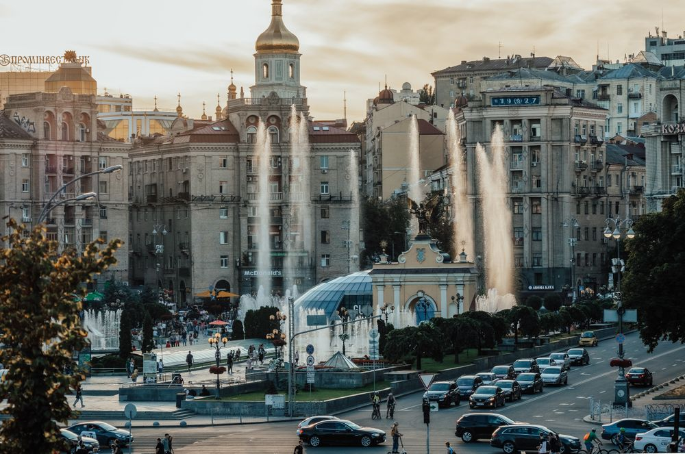
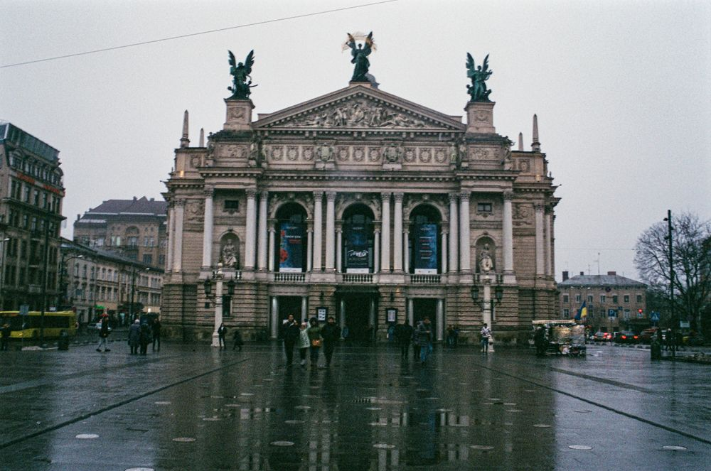

Карпати
Батьківщина | Графічне меню | Сенсорне зображення | Друзі
Моя Батьківщина — Україна. Це країна з багатою культурою, давніми традиціями та різноманітною природою. В Україні є великі міста, старовинні пам’ятки, гори, ліси та річки.
Київ приваблює своїми площами та архітектурою, Львів — історичними будівлями, а Карпати — гірськими краєвидами. Ці місця показують, наскільки різною та красивою є Україна.


Карпати